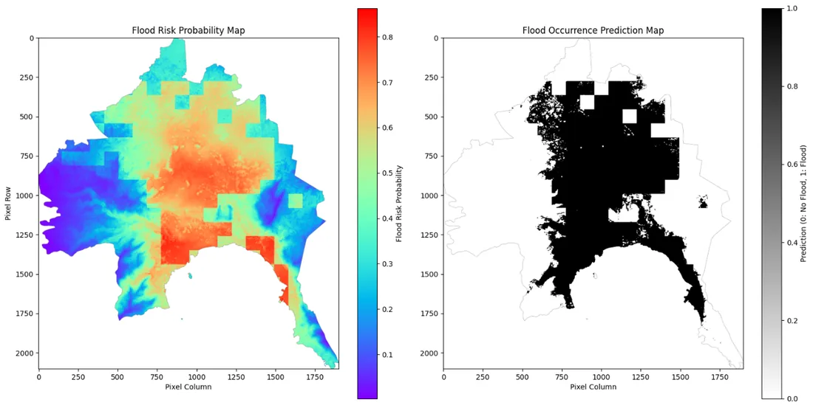
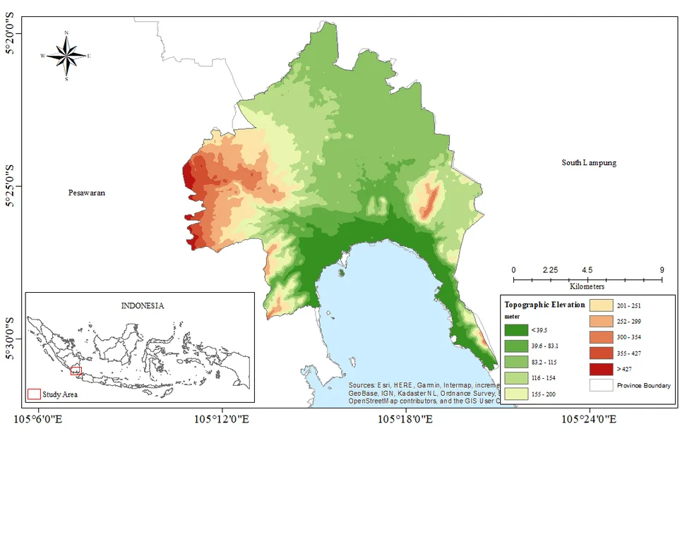

Urban Flood Susceptibility Modeling Using GIS and Machine Learning in Bandar Lampung
Alvin Pratama · Andreas Boni Baik Simamora · Farras Ghaly
Daerah mana di Bandar Lampung yang paling rawan banjir, dan model mana yang paling bisa dipercaya untuk menebaknya. Datanya catatan banjir sepuluh tahun, 2015 sampai 2024, diadu dengan sembilan penciri lingkungan dan infrastruktur.
- Gradient Boosting paling akurat. AUC 0,95 di data uji yang belum pernah dilihat model.
- Regresi Logistik paling stabil. Selisih latih dan validasi cuma 0,03, sedangkan model ensemble sampai 0,12. Akurasi tertinggi belum tentu yang paling bisa dipercaya.
- Rawan banjir menumpuk di dataran rendah, dekat jalan besar, dan di sepanjang jaringan sungai.

Abstrak lengkap, bahasa Inggris
Urban flooding increasingly affects rapidly urbanizing tropical cities, where terrain, rainfall, and anthropogenic surface modification interact to shape spatial flood patterns. This study develops a GIS–machine learning framework to model urban flood susceptibility in Bandar Lampung, Indonesia, using a multi-year flood inventory (2015–2024). A balanced dataset (n = 308; 1:1 flood to pseudo-absence ratio) was constructed using buffered pseudo-absence sampling with spatial separation constraints to reduce bias. Nine environmental and infrastructure-related predictors were evaluated using Logistic Regression (LR), Random Forest (RF), Gradient Boosting (GB), and Support Vector Machine (SVM). Model performance was assessed through five-fold stratified cross-validation, generalization gap analysis (Train AUC − CV AUC), learning curves, and a 20% hold-out test set. GB achieved the highest cross-validation performance (CV AUC = 0.8953), followed by RF (0.8782), SVM (0.8007), and LR (0.6925). However, ensemble models exhibited larger generalization gaps (RF = 0.1218; GB = 0.1047) compared to LR (0.0333), indicating stronger overfitting tendencies. Learning curves confirmed that LR maintained the most stable convergence between training and validation scores. On the independent test set (n = 61), GB achieved the highest predictive accuracy (ROC AUC = 0.9462), whereas LR showed lower discriminative performance (AUC = 0.7065) but greater validation stability. Flood susceptibility was concentrated in low-elevation areas, near major roads, and adjacent to river networks. By integrating learning curve diagnostics with cross- validation and hold-out testing, this study provides a rigorous framework for model selection in data-limited urban environments.